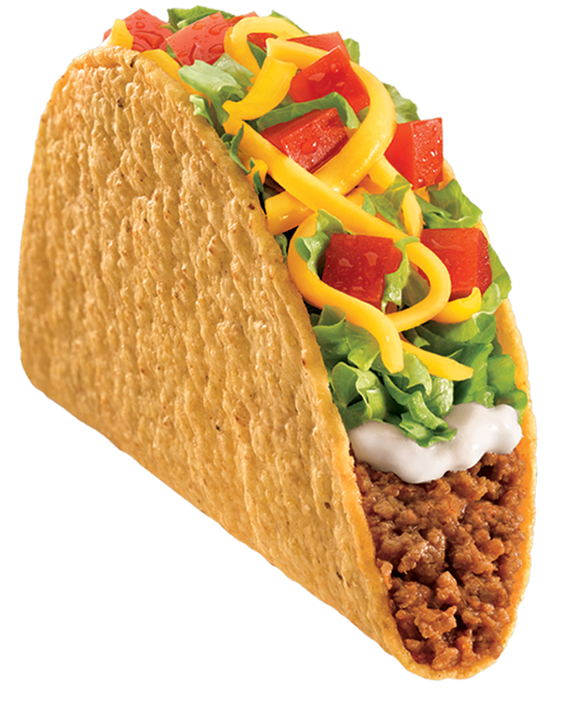
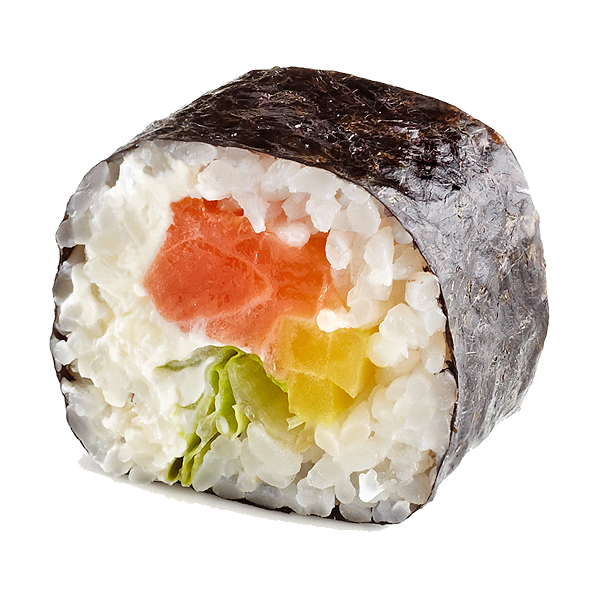
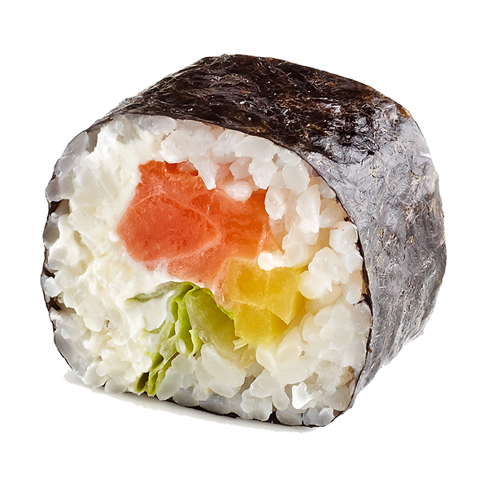
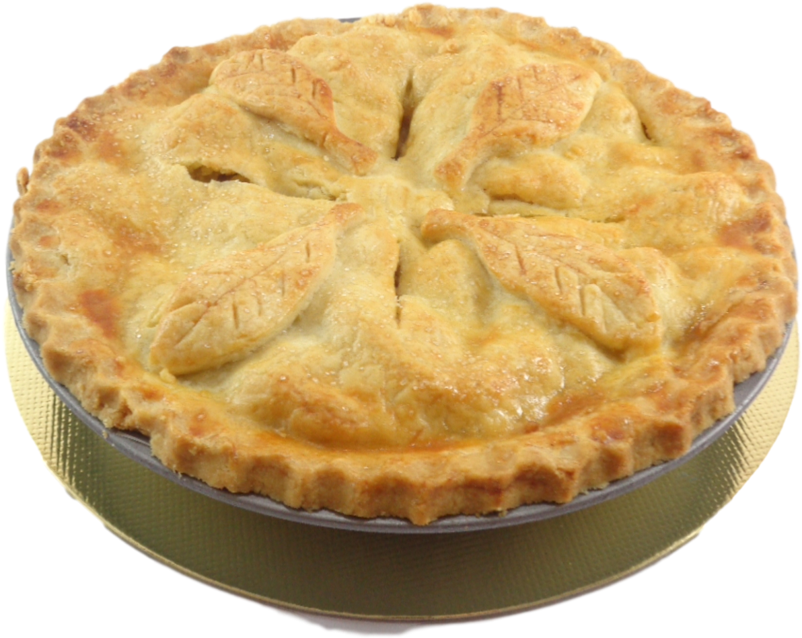
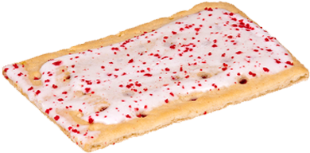
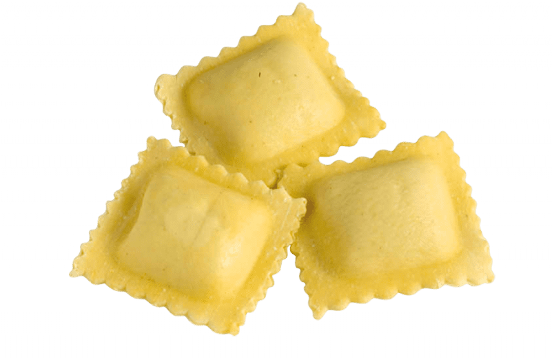
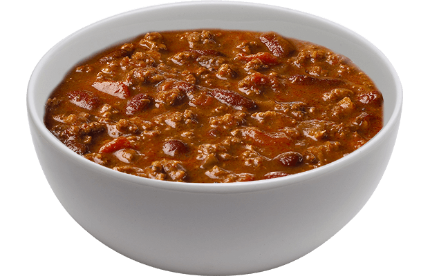
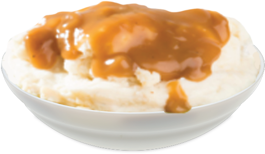
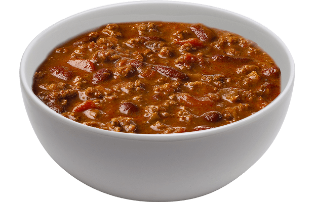
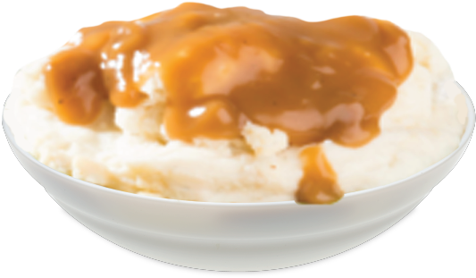

Food Categorization
The Grand Unifying Theory of Food Categorization
When it comes to food, there are three categorizations. A sandwich is any food which is attempting to be contained, but still has some open face or edge. A calzone is any food which is attempting to be contained, but has no open faces or edges. Finally, a salad is any food which does not attempt to be contained. This is officially known as The Grand Unifying Theory of Food Categorization.
Sandwich
This is the basis for your typical sandwich. It is clearly making an attempt to be contained, and has at least one open edge. You can only see part of the ingredients.
Calzone
This is the basis for your typical calzone. It is clearly making an attempt to be contained, and has no open edges or faces. All of the ingedients are concealed within the containment apparatus.
Salad
This is the basis for your typical salad. It is not attempting any sort of containment. All ingredients can be seen clearly.
Further Examples of Sandwiches:
 

Further Examples of Calzones:
  Further Examples of Salads:
 


